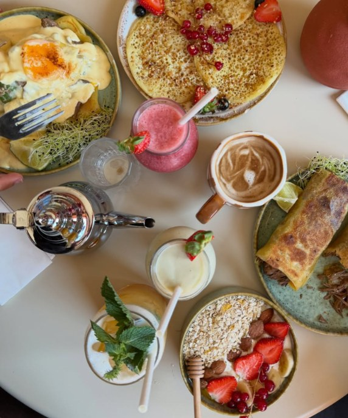
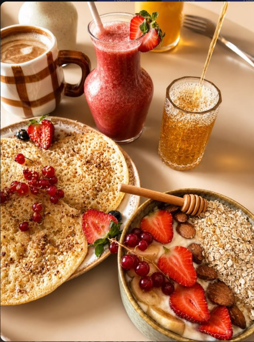
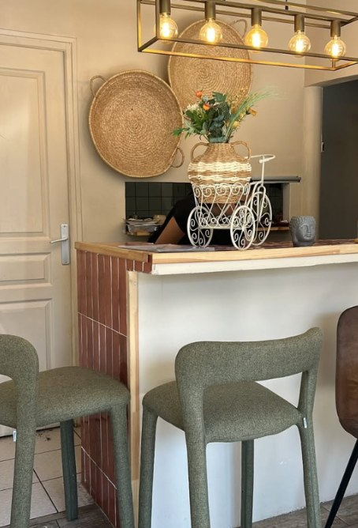
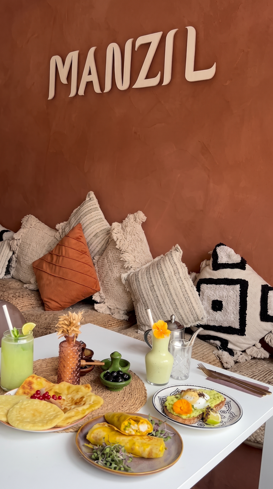

Le brunch marocain, généreux et fait maison
- Msemen & baghrir maison
- Fruits frais de saison
- Du sucré, du salé, à partager

Manzil, la maison
Murs terracotta, coussins tissés et tables garnies : chez Manzil, on prend le temps. Msemen dorés, baghrirs au miel, harchas, bricks et bowls de fruits frais se partagent autour d’un thé à la menthe ou d’un jus pressé.
Chaque recette est préparée sur place, du petit-déjeuner à l’assiette salée.
Msemen · Baghrir · Harcha · Brick · Baklava
Galerie


